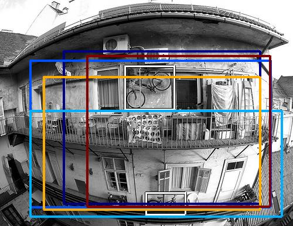
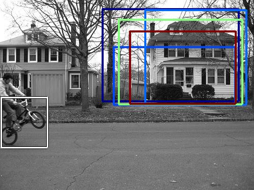
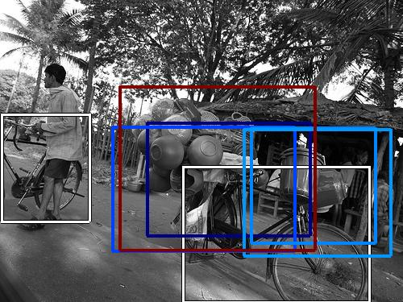
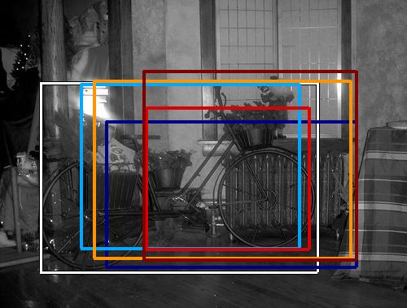
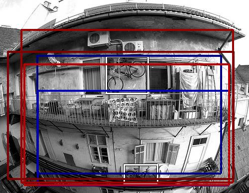
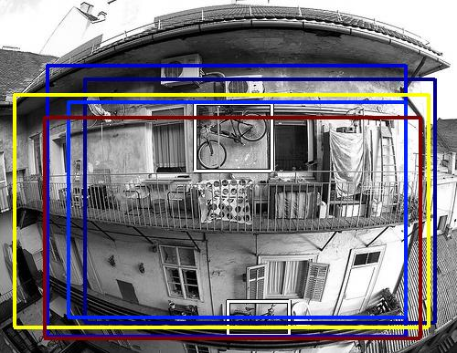
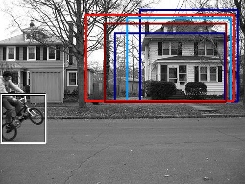
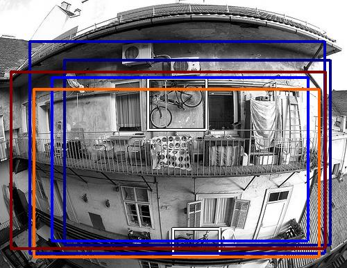
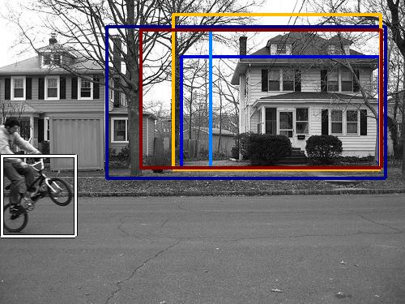

0.552825

0.634589

0.641726

0.650964

0.678985

0.705580

0.740201

0.751529

0.751737

0.761968
| Target image | 0.552825 | 0.634589 | 0.641726 | 0.650964 | 0.678985 | 0.705580 | 0.740201 | 0.751529 | 0.751737 | 0.761968 |
| Target image  |  3260.344727 |  2745.715088 |  2018.794800 |  1953.903809 |  1820.264771 |  1816.824219 |  1785.823120 |  1748.912720 |  1715.071655 |  1595.063721 |
| Target image  |  3096.465820 |  2297.242188 |  2266.543457 |  2238.904541 |  2058.460449 |  2048.944824 |  1983.063599 |  1892.858276 |  1780.713135 |  1726.936646 |
| Target image  |  4487.448242 |  3696.808594 |  3096.075928 |  2522.141602 |  2436.947266 |  2331.775879 |  2232.754883 |  2076.751709 |  2066.938232 |  2050.646240 |
| Target image  |  3016.816895 |  2237.806152 |  2235.991699 |  2227.633057 |  2213.846436 |  2156.282471 |  2134.281738 |  1998.486084 |  1931.158325 |  1765.657959 |